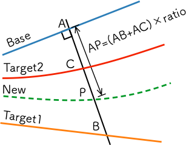

Mediantrack generator¶

メイン機能で読み込んだ2つの軌道に対して、両者の中間点を通る軌道をTrack要素で出力する機能です。
入力パラメータ¶
Base¶
基準となる軌道を指定します。 選択できるのは、自軌道として記述した軌道(Curve, Gradient要素で記述)のみです。 計算結果は、Base軌道を基準とした他軌道として出力されます。
Target¶
中間点を求めたい軌道を指定します。 自軌道として記述した軌道の他に、track構文・kml/csvファイルから読み込んだ他軌道も選択できます。
New¶
新たに出力する軌道へ与えるtrackkeyを指定します。
Start¶
新たに出力する軌道の 開始 地点を、Base軌道上の距離程で指定します。
End¶
新たに出力する軌道の 終了 地点を、Base軌道上の距離程で指定します。
Interval¶
Track構文を出力する間隔をBase軌道上の距離程基準で指定します。 デフォルトでは5mです。
Ratio¶
次図の様に、Base軌道上の点Aにおいて、Base軌道の法線とTarget軌道の交点を点Bとして、線分AB上で新たに求める軌道が通過する位置を点Pとするとき、点Pによる線分ABの分割比をRatioとして指定します。
デフォルト（2軌道の中間点を求める場合）では0.5です。 Ratioに指定する値は、実数であればどの様な値(1.0以上でもマイナス値でも)でも入力できます。
{kind=link}
Output¶
計算結果を保存するファイル名を指定します。
Do It¶
上記のパラメータに基づいて計算を実行します。
実行例¶
基本機能 で作成した up, down軌道を対象に、2軌道の中間点を u-d0.5 軌道として求める場合を示します。 実行イメージは次図の通りです。
{kind=link}
あらかじめ、tutorial.cfgが読み込まれていることが前提です。
入力パラメータ
Base
up
Target
down
New
u-d0.5
Start
0
End
300
Interval
25
Ratio
0.5
Output
省略
出力mapファイル(抜粋):
# Track['u-d0.5'].X
0.000;
Track['u-d0.5'].X.Interpolate(1.900,0.000);
25.000;
Track['u-d0.5'].X.Interpolate(1.900,0.000);
50.000;
Track['u-d0.5'].X.Interpolate(1.900,677.782);
75.000;
Track['u-d0.5'].X.Interpolate(2.201,1073.973);
100.000;
Track['u-d0.5'].X.Interpolate(3.543,-711.831);
125.000;
Track['u-d0.5'].X.Interpolate(4.761,-997.680);
150.000;
Track['u-d0.5'].X.Interpolate(4.955,-6201.574);
175.000;
Track['u-d0.5'].X.Interpolate(4.945,-544.100);
200.000;
Track['u-d0.5'].X.Interpolate(4.336,-3321.170);
225.000;
Track['u-d0.5'].X.Interpolate(2.884,531.707);
250.000;
Track['u-d0.5'].X.Interpolate(1.952,2384.438);
275.000;
Track['u-d0.5'].X.Interpolate(1.900,0.000);
# Track['u-d0.5'].Y
0.000;
Track['u-d0.5'].Y.Interpolate(0.000,0.000);
25.000;
Track['u-d0.5'].Y.Interpolate(0.000,0.000);
50.000;
Track['u-d0.5'].Y.Interpolate(0.000,0.000);
75.000;
Track['u-d0.5'].Y.Interpolate(0.000,0.000);
100.000;
Track['u-d0.5'].Y.Interpolate(0.000,0.000);
125.000;
Track['u-d0.5'].Y.Interpolate(0.000,0.000);
150.000;
Track['u-d0.5'].Y.Interpolate(0.000,0.000);
175.000;
Track['u-d0.5'].Y.Interpolate(0.000,0.000);
200.000;
Track['u-d0.5'].Y.Interpolate(0.000,0.000);
225.000;
Track['u-d0.5'].Y.Interpolate(0.000,0.000);
250.000;
Track['u-d0.5'].Y.Interpolate(0.000,0.000);
275.000;
Track['u-d0.5'].Y.Interpolate(0.000,0.000);